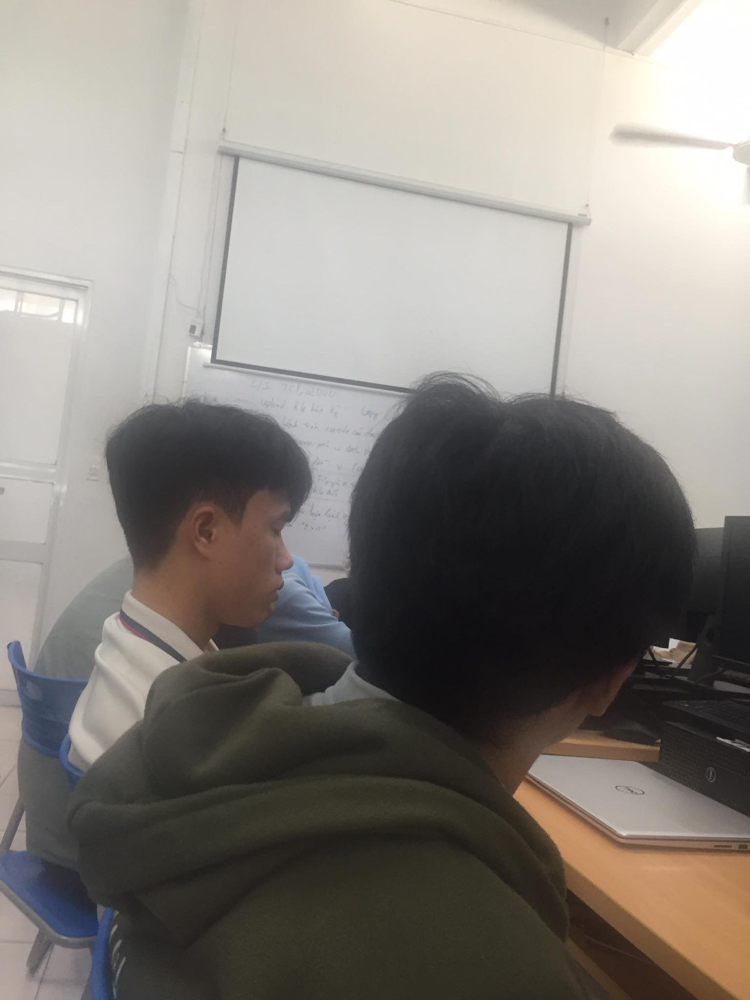

<div class="top-bar">
<div class="branch-tit">
    <a href="#">
        
        <span class="title">HEADQUARTERS</span>
    </a>
</div>


<div class="toggle">

    <i class="bi bi-list"></i>

</div>


<div class="search">
    <input type="text" placeholder="Tìm kiếm .. ">
    <button><i class="bi bi-search"></i></button>


</div>

<div class="user m-2">

    
    <button><i class="bi bi-caret-down-fill"></i></i></button>
</div>


</div>

<style>
    .header .branch-tit {
        text-align: right;
        width: 300px;
        position: relative;

    }

    .header .branch-tit a {
        text-decoration: none;
        padding-right: 30px;


    }

    .header .branch-tit img {
        max-width: 50px;
        max-height: 50px;
        position: absolute;
        left: 10px;
        top: 5px;


    }

    .header .branch-tit span {
        font-family: 'Alumni Sans Inline One', sans-serif;
        font-size: 40px;
        color: black;

    }


    /*top-bar */

    .top-bar {


        display: flex;

        width: 100%;

        justify-content: space-between;
        align-items: center;
        background-color: var(--background-col);
        height: 60px;
        border-bottom: solid 2px #4f5050;


    }

    .top-bar .toggle  {
        position: relative;
        width: 60px;
        height: 60px;
        display: flex;
        justify-content: center;
        align-items: center;
        cursor: pointer;

    }


    .top-bar .toggle i {
        font-size: 2.5rem;
        color: #000000;
    }

    .top-bar .search {
        position: relative;
        flex: 50px;
        text-align: center;


    }

    .top-bar .search input {
        width: 40%;
        height: 30px;
        box-sizing: border-box;
        border: none;
        outline: none;
        padding-left: 20px;
        padding-right: 30px;
        border-radius: 6px;
        font-family: Tahoma, Arial, sans-serif;
    }


    .top-bar .search button {
        position: absolute;
        right: 25%;
        border: none;
        /*background-color: #ff0000;*/
        transform: translateX(-40px);
        border-top-right-radius: 6px ;
        border-bottom-right-radius: 6px ;
        background-color: #ffffff;
        color: #CACACA;

        /*transform: translateX(-70%);*/


    }
    .top-bar .search button i {
        padding: 5px;
        font-size: 20px;


    }

    .top-bar .search input:focus + button{
        background-color: #ff0000;
        color: #ffffff;
    }

    .top-bar .search input:focus {
        border-bottom: solid 2px #CACACA;
    }


    .top-bar .user img {
        width: 40px;
        height: 40px;
        object-fit: cover;
        border-radius: 50%;
        /*margin-right: 10px;*/
        cursor: pointer;
    }

    .top-bar .user button {
        background-color: var(--background-col);
        border: none;
        color: #000000;
        font-size: 10px;
    }

</style>